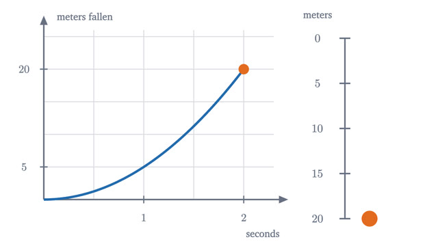
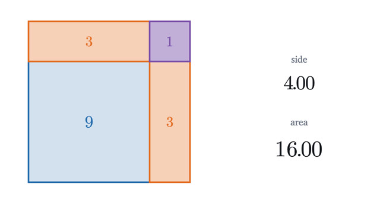
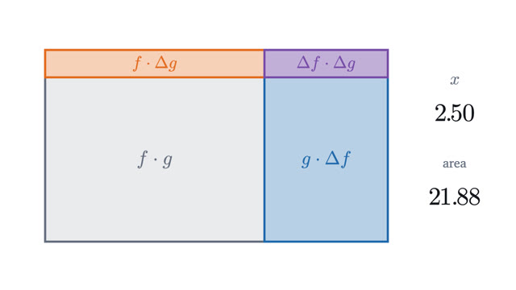
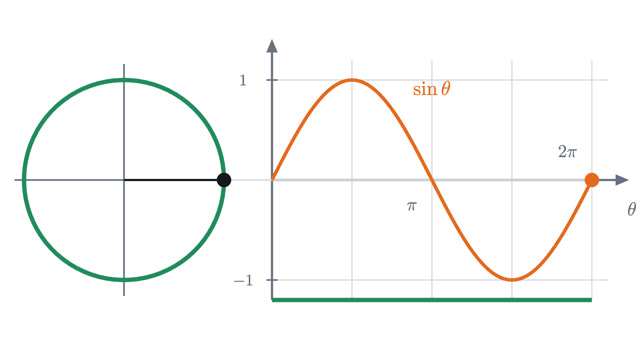
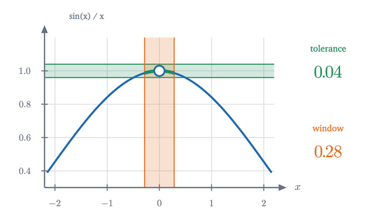
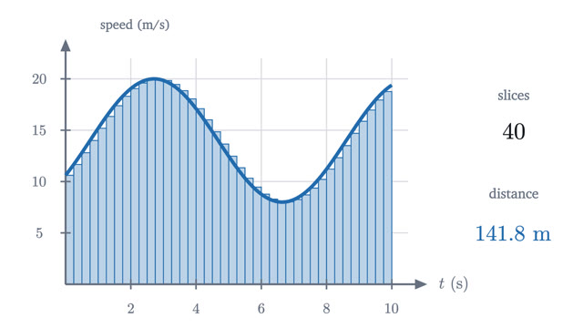
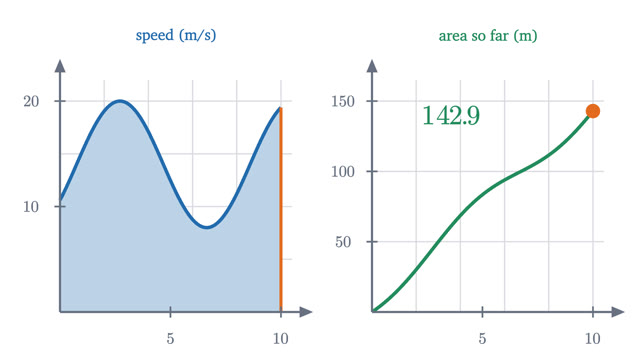
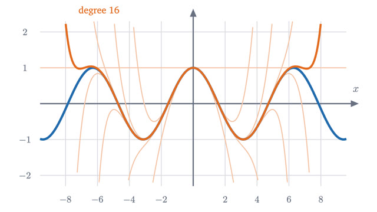
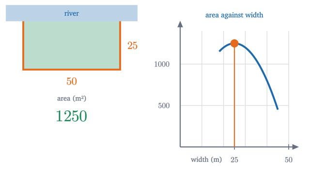

Calculus
Rates and accumulation, built from pictures before formulas.
The first four lessons build the derivative: what it means, then the rules for powers, products, chains and sine. Lesson 5 goes back and makes the idea of a limit exact. Integrals come next, and the fundamental theorem joins the two halves. Taylor series and optimization are the first uses.
Start with lesson 1-
1
What is a derivative? Speed at a single instantA falling ball has a speed at every instant, but an instant is too short to measure a speed over. The derivative is the precise idea that resolves this.

-
2
Why the derivative of x² is 2x: the power rule from picturesA growing square gains two thin strips and a tiny corner. That picture explains the 2 in 2x, and counting the same pieces in general proves the power rule.

-
3
The product rule and the chain rule, seenA rectangle whose sides both change explains the product rule, and a nudge passed along a chain of number lines explains the chain rule. Both are then proved.

-
4
Why the derivative of sine is cosineNudge a point around the unit circle and a tiny triangle appears, similar to the big one. Its legs are the derivatives of sine and cosine.

-
5
What is a limit? The epsilon-delta definition, explainedA limit is a game. You name a tolerance, I answer with a window. From that one definition we prove the limit laws and the squeeze theorem.

-
6
What is an integral? Adding up to get areaDistance from a changing speed, found by slicing time into pieces and adding. The definite integral is the limit of those sums, defined precisely and computed.

-
7
The fundamental theorem of calculus, explained and provedWhy area and slope undo each other. The rate at which an area grows is the height of the curve, and that turns every integral into a subtraction.

-
8
Taylor series: building functions out of polynomialsHow a calculator finds cos(0.3) with only addition and multiplication, why factorials appear, how large the error can be, and where the method breaks.

-
9
Maxima and minima: where the slope is zeroTo fence the largest field or make the cheapest can, look where the derivative is zero, and also at the ends. Why that works, and when it does not.
